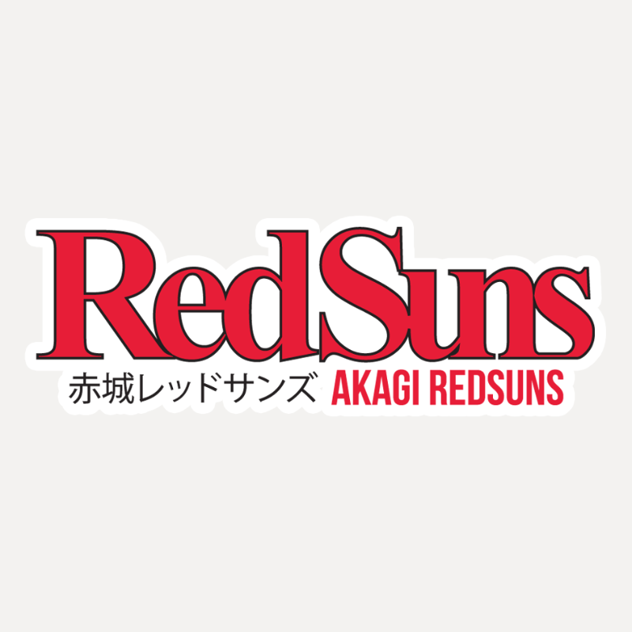
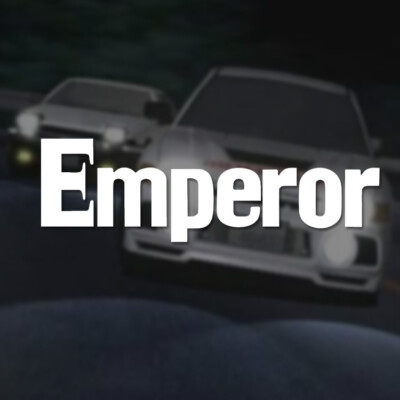

Elenco de Initial D

Conheça o universo de corridas por trás de Initial D
Tudo sobre as equipes, estilos de corridas, as estradas sinuosas da província de Gunma e as máquinas icônicas dos anos 90 que marcaram cada batalha nas montanhas.

Akina SpeedStars - A equipe protagonista do anime
Os Akina Speedstars são uma equipe amadora de corrida de rua do Monte Akina, formada por entusiastas locais liderados por Iketani. Embora não tenham o status ou o orçamento de equipes de elite como os RedSuns, eles ganham enorme destaque graças a Takumi Fujiwara e seu lendário AE86. Suas disputas seguem as regras tradicionais das corridas de touge japonês. O formato principal é a corrida de perseguição, onde vence quem abrir vantagem ou conseguir ultrapassar o rival. O fair play é estritamente valorizado, proibindo batidas intencionais para forçar erros. As provas ocorrem majoritariamente à noite para evitar o tráfego civil. O conhecimento profundo das curvas perigosas de Akina define o sucesso na equipe.

Takumi Fujiwara
Takumi Fujiwara é o protagonista introvertido de Initial D, que desenvolveu habilidades sobre-humanas de pilotagem fazendo entregas de tofu na madrugada com seu AE86. Inicialmente relutante, ele choca a cena do touge ao derrotar pilotos experientes e carros potentes nas descidas de Akina graças ao seu domínio da inércia. Posteriormente, ele aceita o convite para integrar uma parceria com Ryosuke Takahashi da Redsuns. Nessa nova fase, Takumi amadurece como piloto profissional, correndo contra oponentes de todo o Japão.

Corolla Trueno AE86
O lendário Toyota Sprinter Trueno AE86 "Panda" de Takumi pertencia originalmente ao seu pai, sendo usado para entregas de tofu na madrugada de Akina. Apesar da baixa potência frente a rivais turbo, o chassi extremamente leve e a distribuição equilibrada tornam o carro perfeito para as curvas. Nas mãos de Takumi, o veículo usa a inércia e o touge para derrotar supercarros e rivais muito superiores nas descidas da montanha. Posteriormente, o modelo recebe um motor de corrida 4A-GE de 20 válvulas e alta rotação, elevando ainda mais o seu status de lenda.

Itsuki Takeuchi
Extremamente apaixonado por carros e corridas, ele compensa seu pouco talento ao volante com um entusiasmo contagiante. Funciona como o principal alívio cômico da série, sendo impulsivo, falador e frequentemente ingênuo sobre o mundo das corridas. Apesar de seus tombos amorosos e piadas, ele é um amigo leal que apoia fervorosamente a trajetória vitoriosa de Takumi, e que nunca duvida da capacidade de seus amigos de equipe.

Corolla Levin AE85
O Toyota Corolla Levin SR (AE85) é o carro que Itsuki Takeuchi compra acreditando ser um AE86 legítimo. o AE85 possui um motor SOHC de 8 válvulas (1A-U) consideravelmente mais fraco e sem a injeção avançada se comparado ao AE86. Itsuki sofre várias desilusões ao perceber que seu carro não tem potência para acompanhar as disputas de montanha e virar um verdadeiro carro de corrida, mesmo assim, acompanha Itsuki em suas aventuras e em sua jornada de amor pelo automobilismo.

Kenji
Kenji é um dos membros fundadores e mais ativos da equipe Akina Speedstars, sendo um grande amigo de Iketani. Ele é o dono de um Nissan 240SX (RS13) branco e frequentemente atua como espectador privilegiado e narrador das corridas de Takumi. Embora não possua o mesmo destaque nas pistas que os principais pilotos da série, ele é fundamental na logística e apoio da equipe. Sua presença constante nos pontos de encontro reforça o espírito de união e camaradagem dos entusiastas de automóveis em Akina.

Nissan 240SX
O Nissan 240SX (RS13) de Kenji é um dos carros de destaque e presença constante nos encontros dos Akina Speedstars. Equipado com tração traseira e motor turbo, o modelo compartilha a mesma plataforma icónica do Silvia S13, ideal para a prática de drift. Embora Kenji não dispute as batalhas mais perigosas da montanha, ele utiliza o carro para se divertir e acompanhar de perto as corridas. O modelo reforça a cultura JDM clássica da equipe, sendo um dos esportivos japoneses mais emblemáticos daquela geração.

Koichiro Iketani
Koichiro Iketani é o líder e fundador dos Akina Speedstars, sendo o responsável por manter o grupo unido na região. Embora tenha boas intenções e paixão por carros, ele possui habilidades de pilotagem medianas e costuma ficar impressionado com o talento alheio. Dirige um Nissan Silvia K's (S13) prateado e atua como o mentor e suporte moral, especialmente para Takumi e Itsuki. Sua vida amorosa desastrosa com Mako Sato adiciona um toque cômico e melancólico marcante ao longo da história.

Nissan Silvia
O Nissan Silvia K's (S13) prateado de Iketani é o carro que serve como base de encontros e identidade para os Speedstars. Equipado com tração traseira e um motor turbo ágil, o modelo é uma verdadeira lenda da cultura JDM para a prática de drift. Embora Iketani acabe sofrendo acidentes e reconheça que o carro é rápido demais para seu nível de pilotagem, ele o cuida com muito zelo. O Silvia reflete perfeitamente a essência dos entusiastas comuns: um esportivo acessível, divertido e perfeito para as noites na montanha.

Redsuns - Os primeiros rivais
A equipe RedSuns de Akagi, liderado pelos irmãos Takahashi, é uma das forças mais dominantes e respeitadas no universo de Initial D. Diferente de equipes locais informais, contam com engenheiros especializados, patrocinadores e uma estrutura de alto nível. Conhecidos pelo rigor técnico e pela busca implacável pela excelência, eles viajam para desafiar as melhores equipes de outras montanhas da região. Apesar da postura inicialmente arrogante de alguns membros, a equipe demonstra enorme respeito pelo talento bruto e pelo verdadeiro espírito das corridas de touge. É justamente contra os RedSuns que Takumi Fujiwara faz sua corrida de estreia oficial, marcando o início da lenda do AE86.

Ryosuke Takahashi
Ryosuke Takahashi, conhecido como o "Cometa Branco de Akagi", é o líder intelectual e estrategista brilhante da equipe RedSuns. Piloto de elite e estudante de medicina, ele analisa cada curva e componente mecânico com precisão científica para vencer seus adversários. Após perceber que já havia alcançado o seu limite máximo nas montanhas de Gunma, ele decide fundar o Projeto D para levar o automobilismo de rua a outro patamar. Ele atua como o mentor definitivo de Takumi Fujiwara, combinando genialidade tática, liderança exemplar e uma paixão profunda pelas corridas.

Mazda RX-7 FC
O Mazda RX-7 FC branco de Ryosuke Takahashi é um dos carros mais icônicos e sofisticados de Initial D. Equipado com um motor rotativo bi-turbo e um acerto aerodinâmico refinado, ele reflete a mente científica e perfeccionista de seu piloto. O veículo combina alta potência com um equilíbrio dinâmico excepcional, permitindo que Ryosuke domine as montanhas com extrema facilidade. Ele se torna o símbolo da elite dos RedSuns, liderando a evolução técnica das corridas de rua em Gunma.

Keisuke Takahashi
Keisuke Takahashi é o piloto principal e o membro mais explosivo da equipe RedSuns, pilotando um Mazda RX-7 FD3S amarelo. Inicialmente arrogante e impulsivo, ele sofre uma reviravolta marcante após ser derrotado pelo AE86 de Takumi nas curvas de Akina. Com o tempo, ele evolui como piloto profissional e se torna a principal força de subida (uphill) do Projeto D sob a mentoria de seu irmão Ryosuke. Sua paixão intensa pelas corridas e sua busca implacável por aperfeiçoamento o transformam em um dos competidores mais respeitados da série.

Mazda RX-7 FD
O Mazda RX-7 FD amarelo de Keisuke Takahashi é um esportivo altamente modificado que combina um motor rotativo bi-turbo feroz com uma aerodinâmica agressiva. Ele é otimizado para extrair o máximo de potência e aderência nas subidas (uphill), refletindo o estilo de pilotagem veloz e implacável de seu dono. O veículo serve como a principal arma dos RedSuns e do Projeto D para dominar as disputas de alta performance nas montanhas. Sua presença imponente nas pistas coroa a evolução técnica e o status de elite de Keisuke no circuito de touge.

Night Kids - Entre o ego e a agressividade
A equipe Night Kids, liderada por Takeshi Nakazato, são especializados em corridas de subida (uphill) e usam carros potentes com tração integral, suas regras de corrida, consiste em amarrar uma das mão do piloto sobre o volante, para que termine a corrida sem usar as duas sobre o volante, forçando assim, os limites dos corredores nas subidas das montanhas. E diferente de outras equipes, na Night Kids ela sofre de problemas internos constantes entre o líder Takeshi que tem ego inflado e auto-confiança por conta de seu carro potente e com tração integral, e por outro lado, Shingo que usa da agressividade nas corridas e que é capaz de fazer sujeiras sem se importar com a integridade dos adversário para vencer uma corrida.

Takeshi Nakazato
Takeshi Nakazato é o líder da equipe Night Kids de Myogi e um piloto feroz especialista em corridas de subida (uphill). Extremamente orgulhoso e competitivo, ele confia na força bruta e na tração integral de seu carro para intimidar os rivais. Embora inicialmente seja impulsivo e acabe derrotado por Takumi, ele demonstra grande honra e reconhecimento pelo talento alheio. Com o tempo, ele evolui como competidor e se torna um valioso aliado na defesa da região de Gunma contra forasteiros.

Nissan Skyline GT-R
O Nissan Skyline GT-R (R32) preto de Takeshi Nakazato é uma verdadeira potência mecânica equipada com tração integral e motor bi-turbo. Ele se destaca pela força bruta e velocidade estonteante nas retas e subidas, refletindo o estilo agressivo de pilotagem de seu dono. Apesar de sua imponência e reputação temida, o carro sofre algumas derrotas marcantes devido ao seu peso nas curvas diante de rivais mais ágeis. O modelo se consagra como um dos maiores ícones da cultura JDM e a arma principal dos Night Kids nas montanhas de Myogi.

Shingo Shouji
Shingo Shoji é um dos membros de destaque da equipe Night Kids, conhecido por sua pilotagem extremamente agressiva e suja. Ele é o criador da infame técnica da "corrida de fita adesiva", onde prende a mão direita ao volante para forçar arriscadas derragens com uma mão só. Competitivo ao extremo e disposto a tudo para vencer, ele tenta sabotar o AE86 de Takumi empurrando-o perigosamente contra o guard-rail. Após falhar em sua tentativa de acidente forçado, ele acaba sofrendo as consequências de sua própria atitude e perde a disputa.

Honda Civic SiR
O Honda Civic SiR (EG6) vermelho de Shingo Shoji é um hatchback esportivo de tração dianteira extremamente ágil e focado em alta rotação. Equipado com um motor VTEC afiado, ele é perfeito para curvas técnicas, refletindo a pilotagem arrojada e agressiva de seu dono. O carro é especialmente lembrado por ser a ferramenta usada na perigosa "Deathmatch com fita adesiva" contra o AE86 de Takumi. Apesar de sua excelente dirigibilidade em trechos travados, o modelo acaba severamente danificado após Shingo bater contra o guard-rail na tentativa de sabotagem.

Emperor - A equipe composta por Mitsubishi
A Emperor é uma equipe liderada por Kyoichi Sudo, eles chegam a Gunma com o objetivo declarado de varrer todas as equipes locais e provar a supremacia absoluta de seus veículos. A equipe é composta por Mitsubishi Lancer Evolution (principalmente os modelos Evo III e IV), explorando ao máximo a tração integral e os turbos, curiosamente é a equipe que mais deu trabalho para o protagonista, sendo uma das corridas entre o líder da Emperor, uma das únicas derrotas de Takumi, a curiosidade fica para uma regra rigorosa da equipe de que derrotados devem estampar um adesivo de desistência em seus carros, simbolizando a desonra.

Kyoichi Sudo
Kyoichi Sudo é o líder da implacable equipe Emperor, sendo um especialista metódico e frio vindo de Tochigi para dominar Gunma com seus Mitsubishis. Ele impõe uma regra rigorosa onde os derrotados devem colar um adesivo de desonra em seus carros para provar a supremacia técnica da equipe. Utilizando um Lancer Evolution III altamente preparado com sistema anti-lag inspirado no rally, ele consegue infligir a primeira derrota oficial a Takumi Fujiwara. Essa vitória ocorre no Monte Akagi quando o motor original do AE86 quebra sob a pressão extrema do turbo importado e do ritmo implacable de Kyoichi.

Mitsubishi Lancer Evolution III
O Mitsubishi Lancer Evolution III branco de Kyoichi Sudo é uma máquina de rali implacável equipada com tração integral e um potente motor turbo. O veículo se destaca pela inclusão de um sistema anti-lag (misfiring system), que elimina o turbo lag e emite estouros intimidadores nas reduções. Ele serve como a principal ferramenta científica para impor a supremacia da equipe Emperor sobre os rivais nas montanhas de Gunma. O Lancer consagra-se como um dos carros mais formidáveis da série, sendo o responsável direto por quebrar a invencibilidade do AE86 de Takumi.

Seiji Iwaki
Seiji Iwaki é o segundo piloto principal da equipe Emperor, sendo extremamente arrogante e confiante na supremacia de sua equipe. Ele pilota um Mitsubishi Lancer Evolution IV e despreza profundamente as equipes locais de Gunma, considerando-as inferiores. Sua soberba, no entanto, é duramente castigada quando ele é derrotado de forma humilhante pelo AE86 de Takumi nas descidas de Akina. Essa derrota serve como um baque enorme para seu ego, levando inclusive, um tapa no rosto em um momento de fúria do próprio líder da equipe, Kyoichi.

Mitsubishi Lancer Evolution IV
O Mitsubishi Lancer Evolution IV cinza/prateado de Seiji Iwaki é uma máquina de tração integral potente e equipada com aerodinâmica avançada. Embora seja um veículo formidável e moderno, ele carece do sistema anti-lag mais refinado usado pelo líder Kyoichi Sudo. O carro serve como a principal ferramenta para a arrogância de Seiji ao tentar esmagar as equipes locais nas montanhas de Gunma. Ele acaba marcando a história da série ao sofrer uma derrota humilhante para o AE86 de Takumi nas descidas de Akina.

Impact Blue - A presença feminina nas corridas
A Impact Blue é uma equipe composta por Mako Sato e sua co-pilota e melhor amiga Sayuki. Diferente de grandes grupos organizados, elas formam uma dupla focada exclusivamente em dominar a sua montanha natal com um Nissan Silvia S13 de cor azul vibrante. Mako é a piloto talentosa conhecida por suas frenagens agressivas e curvas fluidas nas descidas, enquanto Sayuki atua como a estrategista e navegadora perfeita. Embora amigáveis fora das pistas, elas são temidas e respeitadas por rivalizarem de igual para igual com os melhores corredores de Gunma. A Impact Blue ganha um papel marcante na história ao protagonizar um dos arcos mais memoráveis e sentimentais da série.

Mako Sato
Mako Sato é a talentosa piloto principal da dupla Impact Blue, famosa por dominar as curvas da montanha de Usui. Apesar de parecer tímida e reservada no dia a dia, ela se transforma em uma competidora feroz e extremamente precisa ao volante. Ela pilota um Nissan Silvia S13 azul e forma uma parceria perfeita com sua co-pilota e estratega, Sayuki. Sua trajetória na série é marcada por sua intensa paixão pelas corridas e por um memorável romance não correspondido com Iketani.

Nissan 240SX
O carro de Mako Sato é na verdade um Nissan SilEighty (uma fusão clássica da traseira de um 240SX com a dianteira de um Silvia S13), pintado em um marcante tom de azul.Equipado com um motor turbo SR20DET preparado e tração traseira, o veículo entrega cerca de 230 cavalos com excelente estabilidade.A combinação mecânica foi escolhida por ser uma alternativa ágil e barata para consertar batidas comuns nas montanhas japonesas. Nas mãos de Mako, o modelo se torna uma arma formidável e veloz para dominar as descidas técnicas do Passo Usui.

Sayuki
Sayuki é a co-pilota, estrategista e mente brilhante por trás da dupla Impact Blue no Passo Usui. Extrovertida e com uma personalidade magnética, ela é responsável por analisar os adversários e orientar Mako durante as corridas. Embora não pilote diretamente, seu conhecimento técnico e suas orientações precisas são fundamentais para o sucesso do Nissan SilEighty. Ela também atua como uma grande amiga e conselheira de Mako, inclusive tendo flertado com Takumi durante o anime.

Nissan 240SX
A conversão do Nissan 240SX em um SilEighty nasceu da cultura japonesa de garagens de rua, onde entusiastas trocavam a dianteira de um Silvia S13 acidentado no lugar da original do 180SX. Essa modificação era extremamente popular no Japão dos anos 90 porque unia a estética agressiva dos faróis fixos do Silvia com o menor custo de peças de reposição e aerodinâmica traseira do carro. No universo de Initial D, o carro reflete a praticidade e a criatividade mecânica do tuning, transformando uma batida de montanha em uma máquina ainda mais icônica.